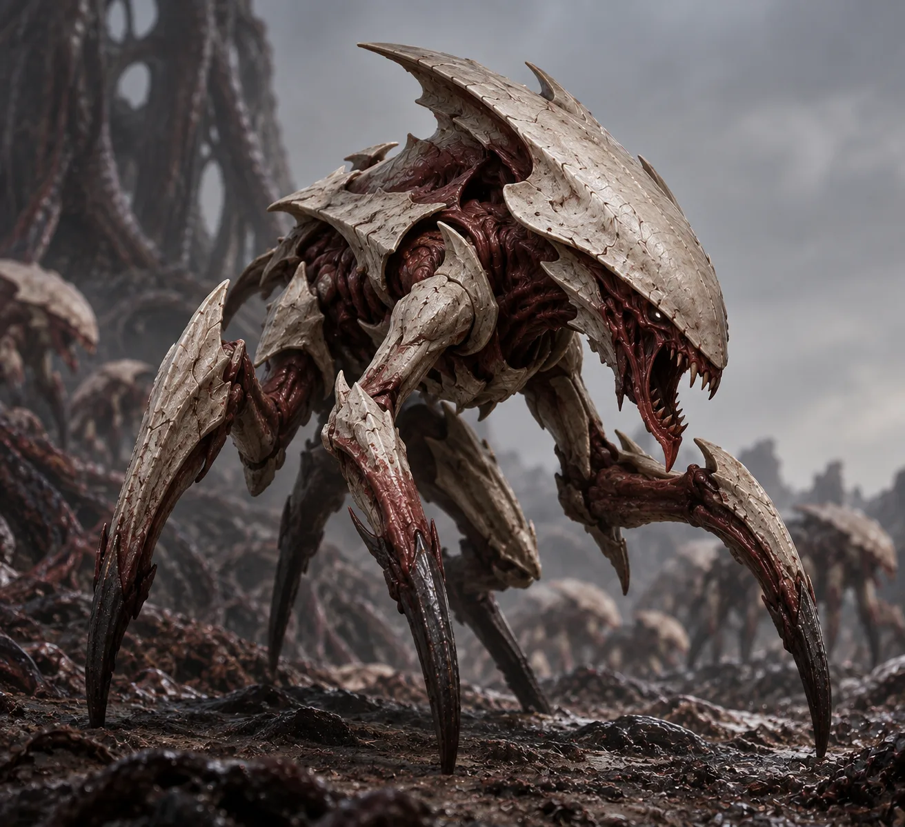
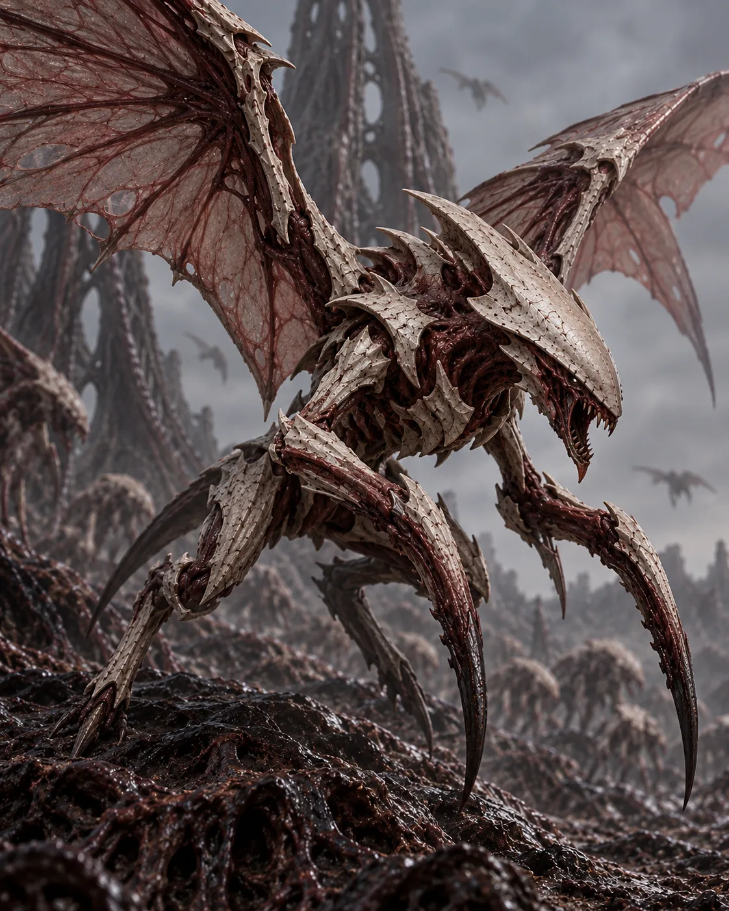
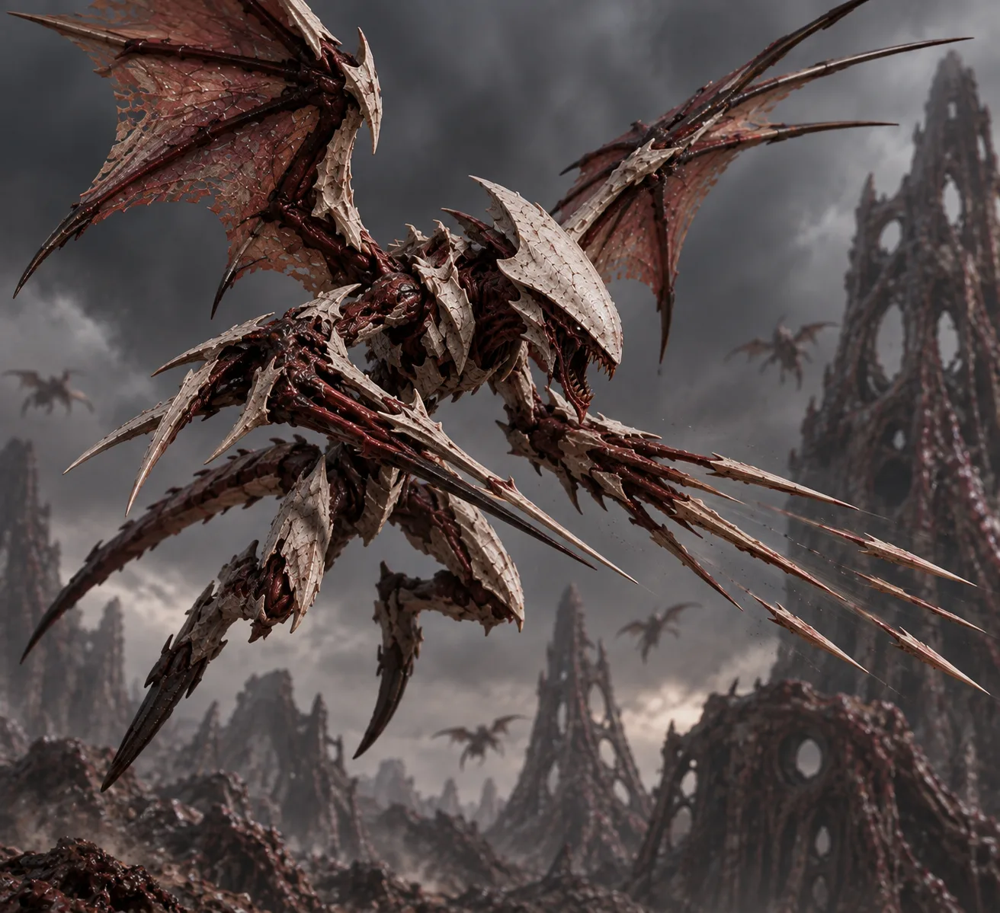
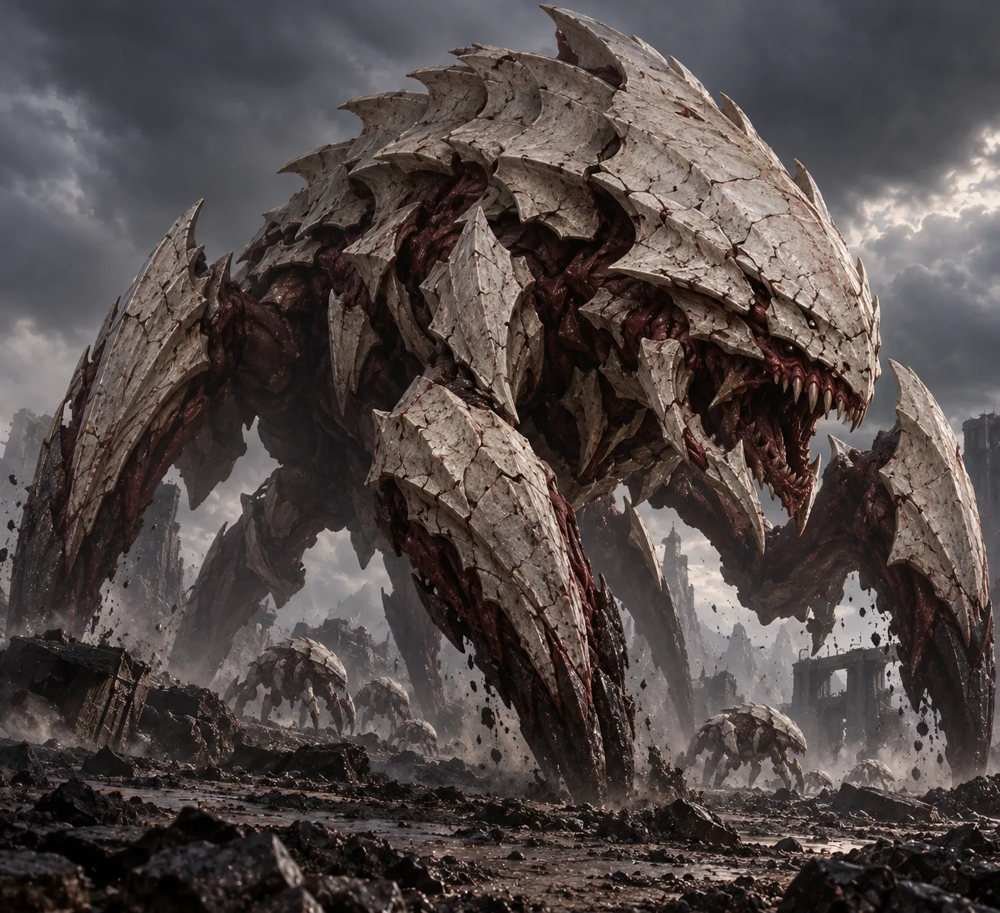

Origen
El origen
Se dice que estos seres son naturales del planeta Martiria, por lo que este pobre planeta tuvo que sufrir
Puedes añadir tantos párrafos como necesites sin modificar el diseño.
Registro clasificado de una especie insectoide parásitoide organizada en una estructura jerárquica de colonia.

Una especie insectoide parásitoide que conquista planetas mediante un elevado número de individuos y mantiene un sistema jerárquico en el que la reina ocupa el rango más alto y lidera la colonia.
Información general de la amenaza
La Colmena Carmesí es una especie insectoide parásitoide caracterizada por su capacidad de expansión y conquista planetaria. Su sociedad se estructura alrededor de una jerarquía en cuya cúspide se encuentra la reina.
Añade aquí información adicional sobre su apariencia, comportamiento, ciclo de vida, hábitat o cualquier otro aspecto que quieras documentar.
Origen, expansión y acontecimientos conocidos
Se dice que estos seres son naturales del planeta Martiria, por lo que este pobre planeta tuvo que sufrir
Puedes añadir tantos párrafos como necesites sin modificar el diseño.
Describe aquí cómo se produce la expansión de la amenaza, qué planetas o territorios ha alcanzado y qué acontecimientos importantes han ocurrido.
Jerarquía y tipos de individuos
La unidad más común, pues esta casta se encarga de funcionar como: Guerrero, trabajador, distracción o reconocimiento. Al contar con un gran número de ellos y ser genéticamente baratos son la primera línea en cualquier combate. Miden 2 metros de alto.

Una unidad voladora que está preparada para poder llegar a lugares que el resto no puede, garantizando que ningún enemigo pueda huir o esconderse de la Colmena Carmesí. Miden 2,5 metros de alto.

Unidad a distancia que se encarga de reducir el número de enemigos en el campo de batalla mientras los guerreros hacen de distracción. Es el peligro "invisible" al que es mejor eliminar primero. Miden 3 metros de alto.

La unidad "tanque" por excelencia, es una unidad que aguanta una grandísima cantidad de daño, son muy grandes y resistentes, pues miden al rededor de 25 metros de alto.
Características y capacidades conocidas
Describe aquí una capacidad, habilidad o característica importante de la amenaza.
Describe aquí otra capacidad o característica.
Explica las adaptaciones biológicas, tecnológicas o sociales que posea la amenaza.
Si existen debilidades conocidas, documenta aquí la información correspondiente.
Estructura interna de la amenaza
La información disponible en el registro base indica que la Colmena Carmesí posee un sistema jerárquico y que la reina constituye el rango superior y el liderazgo de la colonia.
Añade aquí un esquema más detallado de la jerarquía, relaciones entre castas, comunicación, reproducción, estrategia de conquista y cualquier otra información relevante.
Material visual del expediente